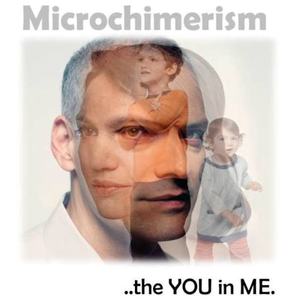
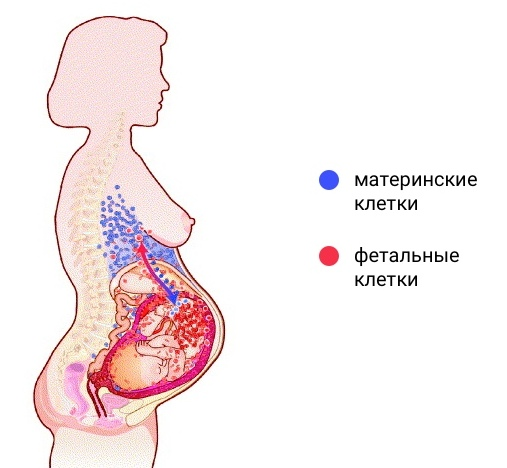
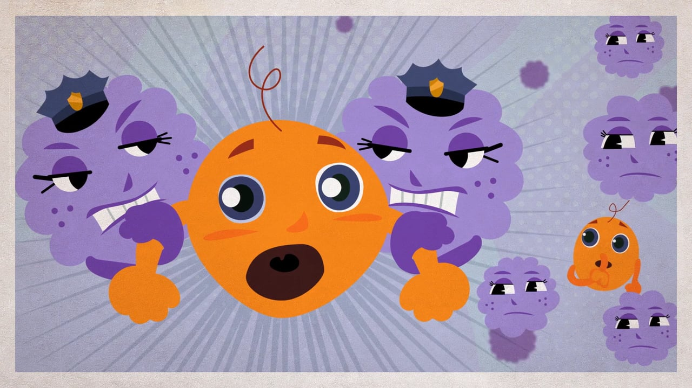
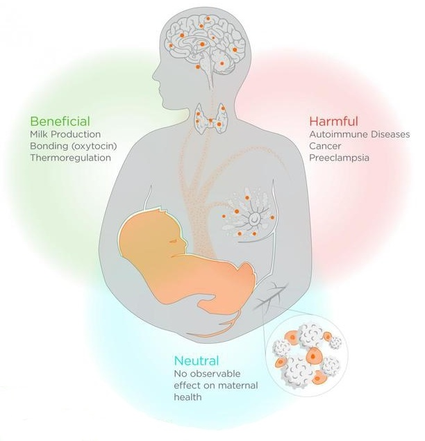
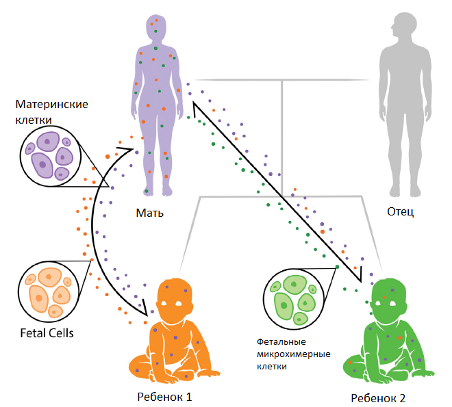

Микрохимеризм. Размывая границы (время прочтения - 5 минут)
Школьная программа утверждает: наше тело развилось из одной оплодотворенной яйцеклетки и все клетки несут одинаковые молекулы ДНК. Логика утверждения проста и понятна, но жизнь всегда сложнее. Прошлая статья раскрыла удивительные случаи химеризма, когда значительная часть организма построена из генетически чужеродных клеток. Распространенность явления точно не известна, но в любом случае рождение полноценной химеры – довольно редкое событие. Можно принять его как очередную диковинку, выдохнуть и жить спокойно: наше тело подчиняется школьному правилу и не готовит сюрпризов. Почти подчиняется и почти не готовит. Современная наука утверждает: все люди немного химеры, у среднего человека каждая миллионная клетка – чужая. Интервенция кажется незначительной, но даже микрохимеризм имеет весомые последствия. Давайте вместе разберемся, как это происходит и чем грозит наш новый статус, а помощником в этом непростом деле станет обычный парень Игорь.
***
Игорь – младший из трех детей и всегда немного комплексовал по этому поводу. Со старшей сестрой Олей их разделяет внушительная разница в пять лет, с сестрой-близнецом Викой – лишь пять минут. Как мы знаем из школьной программы, разнояйцевые близнецы (развившиеся из отдельных яйцеклеток) похожи друг на друга не больше, чем дети, рожденные той же парой в разное время. Никакой особой связи между Игорем и Викой быть не должно.
В прошлой статье мы обсуждали варианты появления химеры при слиянии двух и более эмбрионов во время беременности или поглощении одним эмбрионом других. Настолько плотное и масштабное взаимодействие встречается редко, но при наличии у близнецов общей плаценты между ними возможен обмен небольшим количеством клеток (близнецовый микрохимеризм). При подробном исследовании у Игоря можно выявить женские клетки от Вики, а у нее – мужские от брата.

Микрохимеризм… ты во мне
Найти в организме клетки противоположного пола можно с помощью простых и доступных методов за счет разницы в наборе хромосом. Сложнее с близнецами одного пола – без детального анализа уже не обойтись. Обычно исследуют кровь. Именно клетки крови преимущественно мигрируют через плацентарные анастомозы, поэтому в ней проще найти интервентов. Засечь гостей удается при анализе HLA (человеческих лейкоцитарных антигенов) – ключевого элемента распознавания «свой/чужой» в иммунной системе.
Для однояйцовых близнецов (развившихся из одной яйцеклетки) задача выявления клеток-мигрантов кажется неразрешимой: пришельцы практически идентичны коренному населению. Факт подобного обмена удается доказать только при развитии у одного из близнецов генетической патологии, например трисомии по 21-й хромосоме, более известной как синдром Дауна. В этом случае у здорового ребенка удается идентифицировать клетки больного близнеца и наоборот.
***
Лишь малая часть женских клеток досталась Игорю от Вики. Куда большую долю составляют клетки матери. Обмен между женщиной и ребенком во время беременности идет в обоих направлениях, но точные механизмы перемещения нам еще не известны. Различают фетальный (эмбриональный) микрохимеризм (присутствие клеток плода в организме матери) и материнский микрохимеризм (присутствие клеток матери в организме плода, а потом и ребенка). Этот механизм, пусть и в малой степени, превращает людей в химер. Чужие клетки не только продолжают жить в нашем теле, но также способны к делению. Известны случаи их выделения более чем через полвека после последних родов. Эффекты микрохимеризма этого типа изучены лучше остальных, но до полного понимания картины еще далеко.

Обмен клетками между матерью и плодом
ДНК плода определяется в крови матери уже на четвертой-пятой неделе беременности, а с седьмой уже можно выявить его клетки. Лучше всего они закрепляются в костном мозге, где участвуют в процессе кроветворения. Но возможно расселение в иных органах и системах, что реализуется за счет миграции от плода стволовых клеток с высоким потенциалом к дифференцировке – они еще не приобрели специализацию и способны превратиться практически в любую ткань в зависимости от окружения. Примерно в 10 процентах случаев мужские клетки находят у женщин, не имевших братьев или детей противоположного пола. Один из вариантов объяснения – незамеченная беременность, прервавшаяся естественным путем на раннем сроке.
Может возникнуть вопрос, почему иммунные системы матери и плода не отторгают чужие клетки. Для детей ответ относительно прост: во внутриутробном периоде иммунитет еще только настраивается и знакомится с нормальным окружением. Встречая материнские клетки в это время, он чаще всего принимает их как должное и включает в список инвентаризации. Тем не менее Игорю может грозить ряд неприятных осложнений. Так, в сердцах мальчиков, погибших от инфаркта, нашли высокий процент женских клеток. Прослеживается связь с некоторыми заболеваниями, считающимися аутоиммунными (когда иммунная система атакует клетки собственного тела): ювенальный дерматомиозит, неонатальная волчанка, склеродермия и другие. Не все из них проявляются в детстве, некоторые могут подстеречь во взрослом возрасте. Возможно, данные заболевания не являются истинно аутоиммунными и реакция идет только на материнские клетки. Дальнейшее рассмотрение вопроса поможет в диагностике и лечении этих патологий.
Даже с учетом вышесказанного для большинства людей материнский микрохимеризм играет положительную роль. Он помогает маленькому Игорю в защите от инфекций, истинных аутоиммунных реакций и даже от развития злокачественных опухолей за счет фоновой стимуляции защитных систем организма. Также есть предположение о важном значении микрохимеризма для нормального протекания беременности.
***
С материнским организмом все несколько сложнее, и уже сам Игорь способен принести немало проблем. Во время беременности у женщин происходит запланированное ослабление иммунного ответа, которое помогает избежать отторжения плода. Это дает мигрировавшим клеткам Игоря некую фору для закрепления на новом месте. Но пришельцы не идентичны аборигенам и иногда в последующем попадают в зону внимания иммунной системы, становясь причиной серьезных заболеваний, пока воспринимаемых как аутоиммунные. Это одно из объяснений, почему женщины чаще страдают подобными патологиями. Например, ревматоидный артрит у мужчин встречается в три раза реже.

Не всем мигрировавшим клеткам плода удается избежать внимания
иммунной системы матери
В то же время клетки плода способны мигрировать в поврежденную ткань матери и включаться в работу по ее восстановлению. С точки зрения эволюции это правильная идея: выживет мать, выживет ребенок. Экспериментально подтверждено ускоренное заживление ран, в которых присутствовали клетки плода.
В ряде нейтральных случаев мигрировавшие клетки с током крови попадают в легкие и другие органы. Там они могут годами или десятилетиями оставаться безмолвными жителями, не оказывая никакого воздействия из известных нам.
В некоторых органах их роль более явная. Судя по всему, они участвуют в развитии молочных желез. Микрохимеризм сопровождал все 160 миллионов лет эволюции млекопитающих – не удивительно, что клетки плода научились участвовать в подготовке к лактации (выделению молока). Молоко жизненно важно для ребенка, но его производство – тяжелая задача для организма матери. Ученые выявили, что у женщин, в чьих железах мало клеток плода, лактация снижена или нарушена. Также установлено, что уменьшение риска развития рака молочной железы у рожавших женщин тоже связано с микрохимеризмом: чем больше клеток плода в железе, тем ниже риск. Но часть исследований предупреждает об их связи с временным повышением риска рака груди вскоре после беременности.

Последствия микрохимеризма.
Полезные: контроль продукции молока и терморегуляция, усиление привязанности через продукцию окситоцина. Вредные: повышение риска развития аутоиммунных заболеваний, рака и преэклампсии (тяжелого осложнения беременности). Нейтральные.
Щитовидная железа выполняет широкий набор функций в период беременности и становится еще одной мишенью для микрохимеризма. Клетки плода на протяжении всей беременности манипулируют железой матери. Высокий уровень интервентов обнаружен в железах женщин, страдающих болезнью Грейвса, тиреоидитом Хашимото и раком щитовидной железы. С другой стороны, несмотря на такой фактор повышения риска, мужчины и женщины болеют раком щитовидной железы одинаково часто. Ясно одно: иммунная система матери, пытаясь контролировать заселяющие организм чужие клетки, иногда дает сбой, приводящий к болезням. Но это не обязательный сценарий развития событий.
***
Женщины сохраняют в себе летопись перенесенных беременностей сроком более семи недель, пополняя коллекцию клетками каждого ребенка, даже не родившихся. Таким образом, Игорь может получить от матери не только ее материал, но и клетки старшей сестры Оли. Кроме того, мать может нести клетки, приобретенные во время собственного внутриутробного развития, и тогда Игорь получит материал бабушки, дяди и тети. Такая передача подтверждена нахождением мужских клеток у девочек, не достигших репродуктивного возраста. В этом смысле ребенок представляет собой мультихимерный организм, построенный из клеток не только многих людей, но и многих поколений. Ваша семья действительно всегда с вами и намного ближе, чем можно представить.

Женщины сохраняют в себе летопись перенесенных беременностей
Микрохимеризм несет как проблемы, так и благо. До конца не понятно, что это: неизбежная ошибка или инструмент эволюции. Скорей всего – все сразу. И, конечно, это очередной повод задуматься об удивительности нашего мира, в котором не существует четких границ классических законов.
За две статьи мы рассмотрели многие удивительные аспекты естественного химеризма. Но все большую роль приобретает искусственный химеризм, связанный с медициной и клеточными технологиями. Как ученые обращают на пользу этот мощный механизм, удивительные случаи неожиданного исцеления, а также зачем нужны химеры животных с клетками человека – об этом читайте в завершающей серию третьей статье.
Автор Александр Шаров
Зарегистрируйтесь на Портале.
Выберите удобный для Вас вариант регистрации.
ПРОДОЛЖИТЬ С ПОМОЩЬЮ VK.COM ПРОДОЛЖИТЬ С ПОМОЩЬЮ GOOGLE ПРОДОЛЖИТЬ С ПОМОЩЬЮ FACEBOOK ПРОДОЛЖИТЬ С ПОМОЩЬЮ TWITTERили
Нажимая «Регистрация» или «Продолжить», я принимаю следующее: Условия предоставления услуг, Условия обработки платежей, Политика конфиденциальности.
У Вас уже есть аккаунт на Портале?